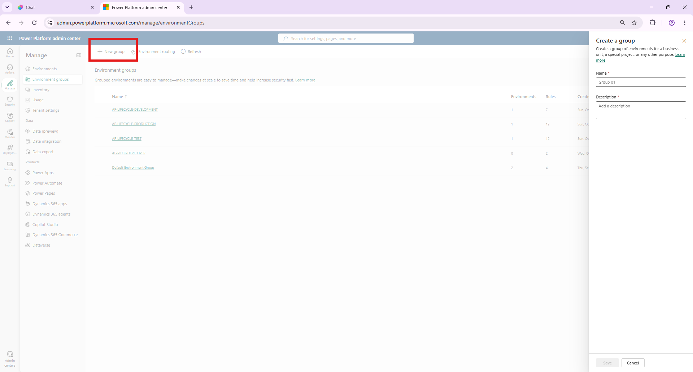
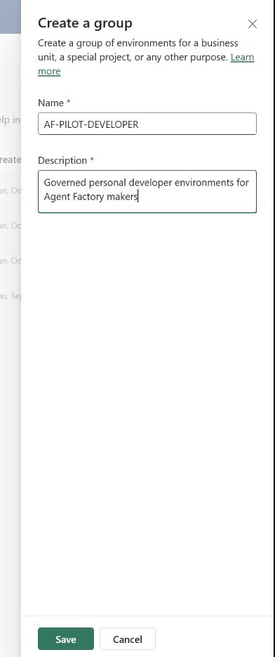
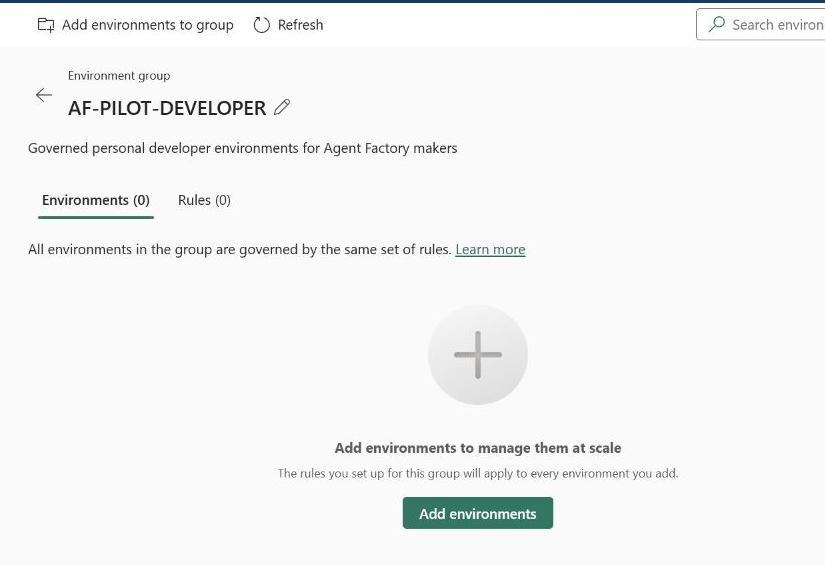
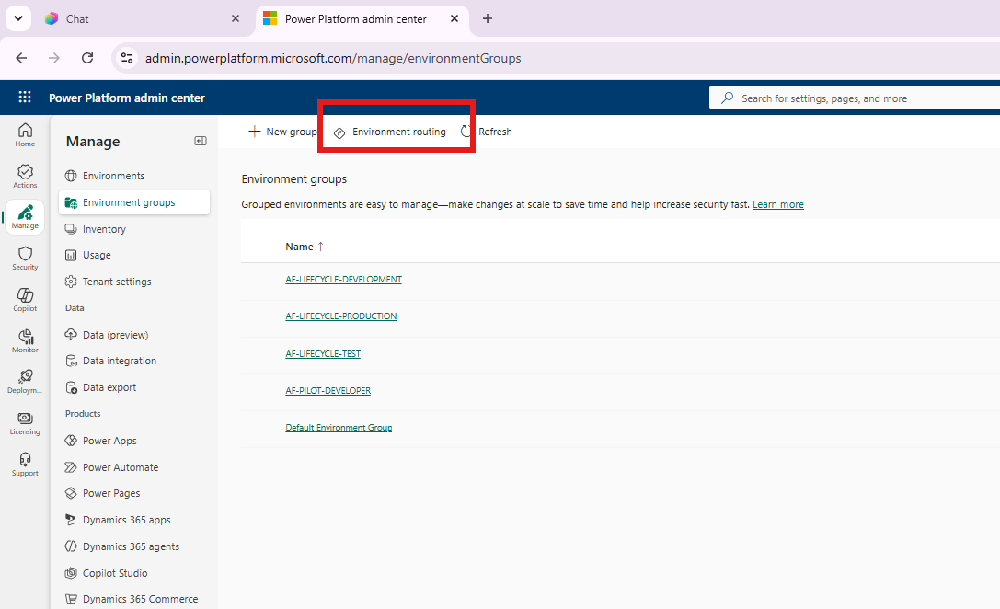
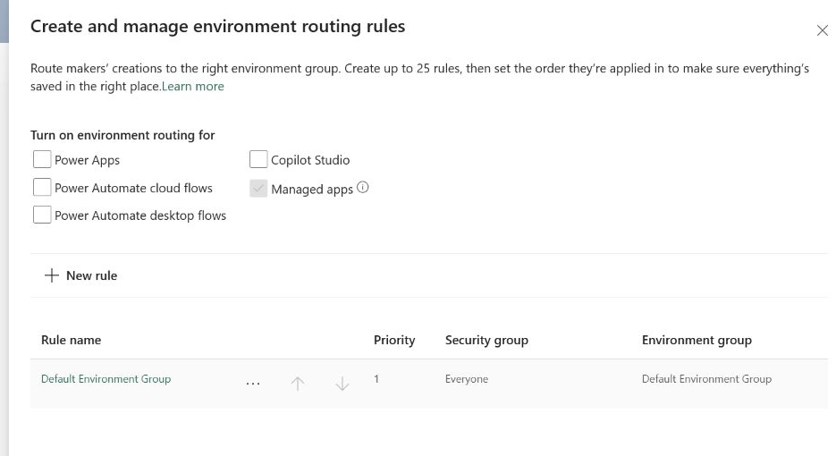
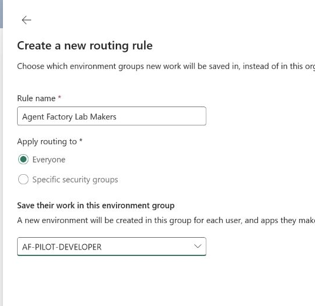
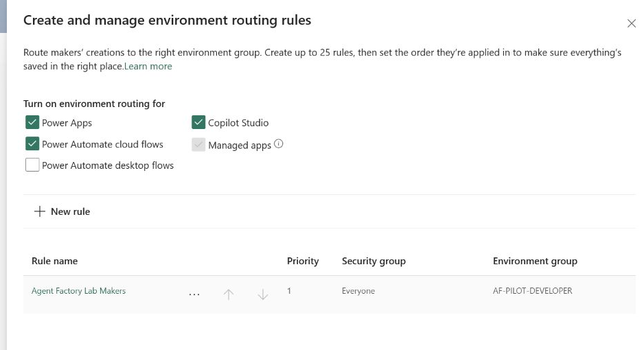

Prashant Rangi · 2026-10-15T06:17:02 · publish
Categories: Copilot Studio, Copilot Studio & Agent Factory
Tags: Agent Factory, Agent Governance, Copilot Studio
Power Platform Point 18 configuration in the LAB tenant
Environment routing is a Power Platform tenant capability that directs eligible makers to a personal developer environment when they open Power Apps, Power Automate, or Copilot Studio. The routed environment is associated with a designated environment group, allowing centrally published Managed Environment rules to govern the maker workspace from the start.
For an Agent Factory, this routing is important because it creates a governed entry point for agent development. It keeps experimentation and early prototypes out of the shared default environment, separates personal maker work from the shared DEV, TEST, and PROD lifecycle environments, and makes governance consistent before an agent enters the formal ALM pipeline.
In this LAB tenant, makers are routed to personal developer environments within the AF-PILOT-DEVELOPER group. The rule is enabled for Power Apps, Power Automate cloud flows, Copilot Studio, and managed apps.
Select New group. Set the name to AF-PILOT-DEVELOPER and describe it as the governed home for personal developer environments used by Agent Factory makers. Do not add the shared AF-PILOT-DEV, TEST, or PROD environments to this group.


After saving, confirm that AF-PILOT-DEVELOPER appears as a separate environment group. It is expected to be empty until a qualifying maker without a personal developer environment opens one of the enabled maker portals.

Return to the environment-group list and select Environment routing. The tenant already had an Everyone rule pointing to Default Environment Group, while the maker portals were not enabled.


Open the existing rule, rename it Agent Factory Lab Makers, retain the Everyone scope for this LAB tenant, and set the destination to AF-PILOT-DEVELOPER. In a production tenant, use a dedicated maker security group when routing should apply only to an approved cohort.

Enable Power Apps, Power Automate cloud flows, and Copilot Studio. Managed apps remains enabled by the platform. Leave Power Automate desktop flows off for this pilot, and then save the routing configuration.
The routing pane was closed and reopened after saving. The persisted configuration showed the Agent Factory Lab Makers rule at priority 1, scoped to Everyone, with AF-PILOT-DEVELOPER as the target. Power Apps, Power Automate cloud flows, Copilot Studio, and managed apps remained enabled.

A routed environment is created only when an eligible maker needs one. Existing agents and the shared DEV, TEST, and PROD environments are not moved by this configuration.